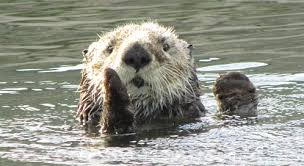

Sea Otter
To keep from drifting apart while they snooze, sea otters often sleep holding paws.
- Food: The sea otter must consume between 25 and 40 percent of its body weight daily, just to keep warm.
- Sea Gardener: When the sea urchins’ populations are controlled by sea otters, vital kelp forests can flourish.
- Handy Animal: The sea otter is one of the few mammal species on Earth to use a tool to help it hunt and feed.
- Crafty: Another underwater superlative: The sea otter is the only marine mammal capable of flipping over boulders on the sea floor—in this case to search out food.
Sea otters are neat creatures that help keep kelp forests in check. Without their hard work, sea urchins could severly damage the ocean environment.